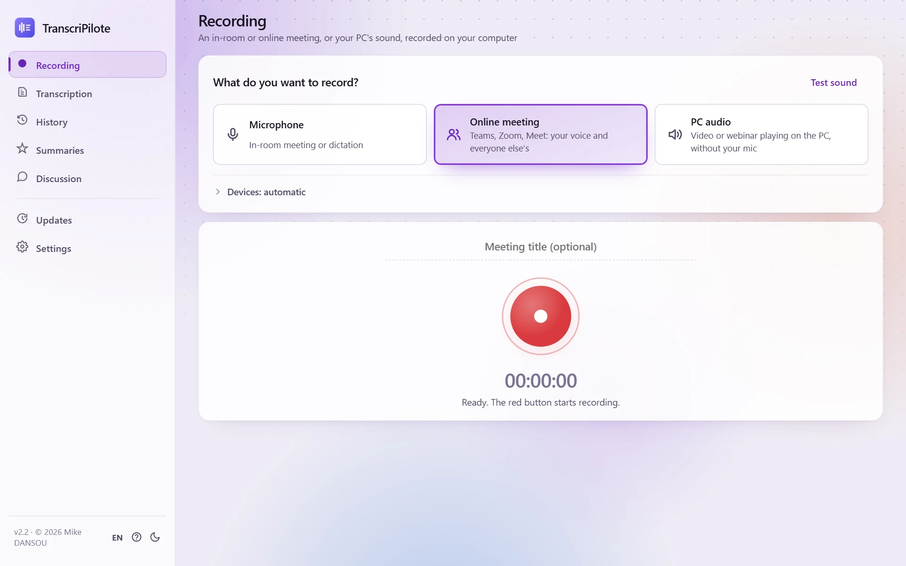

Your meetings, transcribed and summarized on your own computer.
TranscriPilote records your Teams, Zoom, Meet or in-room meetings, transcribes them, writes a summary and answers your questions. Everything happens on your Windows PC: no account, no subscription, no meeting sent over the Internet.

- Processed on your PCTranscription, summaries and questions run on your processor.
- No graphics cardAn ordinary laptop is enough, with no admin rights.
- English and FrenchThe app, the transcripts and the summaries.
From meeting to decisions
Four steps, from the first spoken word to the list of action items.
-
1
Record
An online meeting (Teams, Zoom, Meet), an in-room meeting with the microphone, or an existing audio or video file. TranscriPilote follows your headset or speakers if you switch during the meeting.

-
2
Transcribe
Speech becomes accurate, timestamped text, even on a processor several years old. An interrupted transcription resumes where it stopped.
-
3
Summarize
An AI installed on your PC writes the summary, key points and action items. Add the participants' names for a more accurate result.

-
4
Ask
Ask the meeting your questions: “who is proofreading the copy, and by when?”. Answers rely only on what was said.

Built for real working days
Forgot to stop a recording?
Pick the useful part to the minute, transcribe only that part, or cut the recording.
Offline dictation
A microphone button writes your questions and instructions as you speak.
Nothing gets interrupted
No update, closed window or power cut makes you lose work in progress.
Automatic stop, if you want it
When nobody is speaking any more, or after a maximum duration. Off by default, and discreet.
Your meetings stay with you.
Nothing said in a meeting leaves your computer. TranscriPilote only connects to the Internet to:
- check whether a new version exists, on GitHub;
- download the transcription models once, on first use;
- copy your data to your own Google Drive or OneDrive, if you turn on backup.
Compared with online transcription services
| Criterion | TranscriPilote | Typical online services |
|---|---|---|
| Where your meetings are processed | On your PC | On remote servers |
| Price | Free, no limits | Subscription or minute quota |
| Account required | None | Mandatory |
| Works offline | Yes | No |
| Questions about the meeting | Yes, locally | Depends on the plan |
Try it on your next meeting.
Free, no sign-up. Installation takes a few minutes, in your Windows profile.